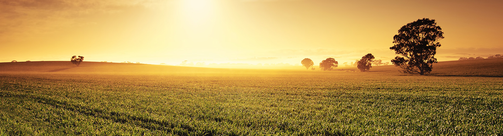

Growing Knowledge, Growing Agriculture
The Agriculture Information Portal provides farmers with useful information about crops, fertilizers, weather conditions, market prices and government schemes. Our aim is to help farmers improve productivity using modern agricultural knowledge and technology.
Rice is the staple food crop of India and is mainly grown during the Kharif season.
Wheat is an important Rabi crop used for making flour, bread and other food products.
Maize is a versatile cereal crop used for food, animal feed and industrial purposes.
Sugarcane is a commercial crop cultivated mainly for sugar and ethanol production.
Cotton is India's major fibre crop and is widely used in the textile industry.
Groundnut is an important oilseed crop used for edible oil production.
Millets are nutritious grains that grow well in dry regions and require less water.
Pulses are rich in protein and help improve soil fertility through nitrogen fixation.
| Crop | Growing Season | Duration | Suitable Soil | Major Producing States | Average Price (₹/Quintal) |
|---|---|---|---|---|---|
| Rice | Kharif (June-November) | 120-150 Days | Clay Soil | West Bengal, Punjab, Uttar Pradesh | 2500 |
| Wheat | Rabi (November-April) | 110-140 Days | Loamy Soil | Punjab, Haryana, Uttar Pradesh | 2400 |
| Maize | Kharif | 90-110 Days | Well Drained Soil | Karnataka, Bihar, Madhya Pradesh | 2200 |
| Sugarcane | Annual | 10-18 Months | Loamy Soil | Maharashtra, Karnataka, Uttar Pradesh | 3200 |
| Cotton | Kharif | 160-180 Days | Black Soil | Gujarat, Maharashtra, Telangana | 7600 |
| Groundnut | Kharif | 110-130 Days | Sandy Loam Soil | Gujarat, Andhra Pradesh, Tamil Nadu | 6400 |
| Location | Temperature | Humidity | Rainfall |
|---|---|---|---|
| Bengaluru | 28°C | 72% | Light Rain |
| Crop | Recommended Fertilizer | Purpose |
|---|---|---|
| Rice | Urea | Provides Nitrogen |
| Wheat | DAP | Improves Root Growth |
| Maize | NPK | Balanced Nutrition |
| Sugarcane | Potash | Improves Sugar Content |
| Cotton | NPK + Urea | Healthy Plant Growth |
| Groundnut | Gypsum | Improves Pod Development |